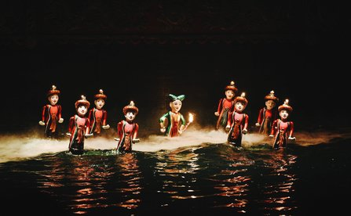

HIGHLIGHTS
Du lịch không chỉ là đi thăm thú các nơi, mà còn là tạo kỉ niệm tại bất cứ nơi nào bạn đặt chân tới. Dù là lần đầu ghé thăm hay là quay lại thành phố sống động này, Sài Gòn luôn chứa đựng những bất ngờ cho bạn khám phá. Cùng tìm hiểu văn hóa đa dạng nơi đây qua những sự kiện địa phương để trải nghiệm Sài Gòn đích thực.

MÚA RỐI NƯỚC
Múa rối nước truyền thống của Việt Nam là một trong những điểm nhấn về văn hóa cho du khách đến với thành phố Hồ Chí Minh. Nguồn gốc của múa rối nước bắt nguồn từ những cánh đồng lúa nước của vùng đồng bằng sông Hồng, miền Bắc Việt Nam, mô tả văn hóa và phong tục tập quán của người dân Việt. Khán giả sẽ được thưởng thức kịch rối nước trên một sân khấu nước cùng với nền nhạc từ những dụng cụ âm nhạc truyền thống, chơi lên những bài dân ca. Tại thành phố Hồ Chí Minh, 2 địa điểm du khách thường đến xem múa rối nước là Nhà hát Múa rối nước Rồng Vàng và Bảo tàng Lịch sử Việt Nam